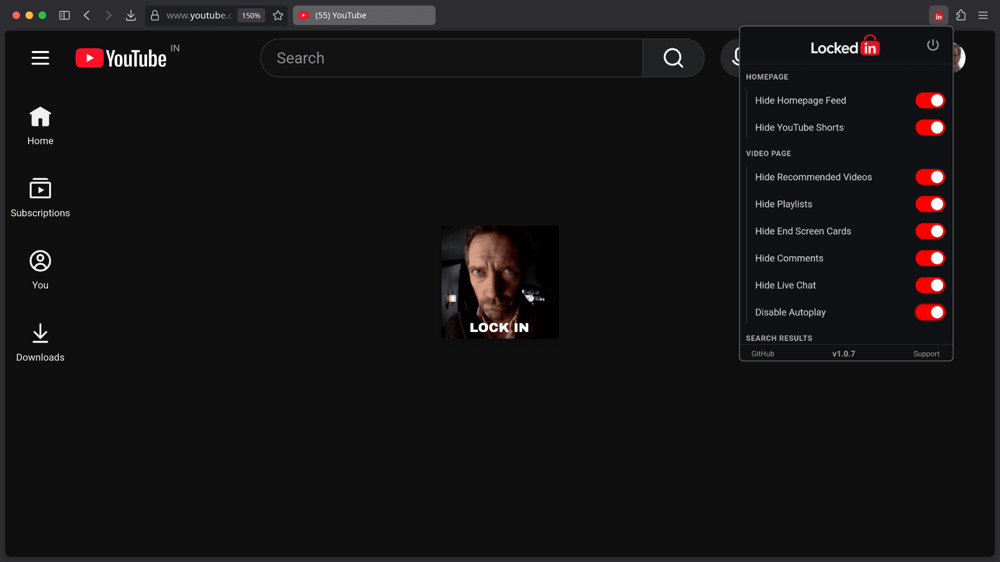
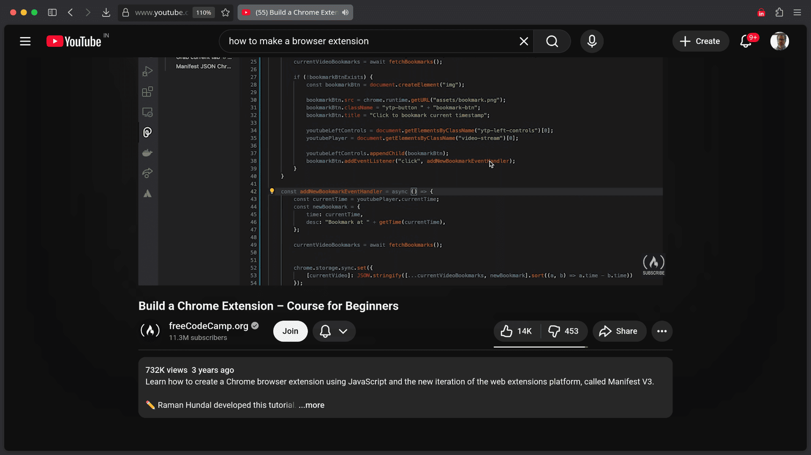
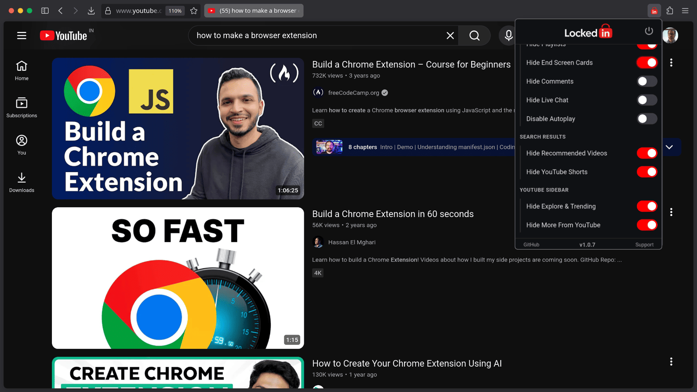

LockedIn gives you complete control over your YouTube experience with 25+ powerful, customizable toggles. Each feature can be enabled or disabled with a single click from the extension popup, allowing you to create a personalized, distraction-free browsing environment. All features work entirely on your device with zero data collection - your privacy is never compromised. Whether you want to hide the endless feed, block Shorts, remove comments, or disable autoplay, LockedIn puts you in the driver's seat. Browse YouTube intentionally, watch what you came for, and take back control from the algorithm.

Take back your homepage. LockedIn removes the endless feed of recommended videos, giving you a clean space. No more getting sucked into the algorithm before you even start.
Watch what you came for, nothing more. When you're on a video page, LockedIn gives you smart control over sidebar content. Keep your playlists visible while hiding distracting recommendations. Focus on the content you chose, then move on with your day.


Find what you're looking for without the noise. Clean search results mean you get exactly what you searched for, without YouTube trying to redirect your attention to trending content or shorts.
Got suggestions for new features or improvements? We'd love to hear from you.
Share Your Ideas